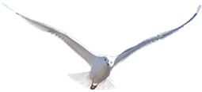
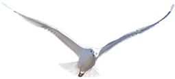

WE'RE BACK
Après les mésaventures de Gorillaz sur plastic Beach. Murdoc tente de réunir à nouveau le groupe pour l’élaboration d’un nouvel album. Pour que les évenements ne dérappenent pas à nouveau, le leader autoproclamé a disséminé à travers le site plusieurs indices à résoudre pour donner rendez-vous aux différents membres du groupe. Seras-tu déchiffrer les indices pour être de la partie ?